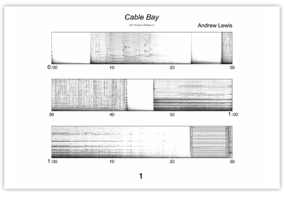

“Ten brief minutes during which the music is manifested in pure sensual splendour… as soon as the performance is over, we immediately want more... this is one of the blessed moments.”
François Tousignant, Le Devoir (Montréal), 17 Dec 2001
Date of composition: 1999
Duration: 10:04
Format: fixed medium sound (stereo, also 8ch & 5.1 versions)
Premiere: 29 May 1999, Bourges, France
Festival Synthèse, GMEB
Palais Jacques Coeur, Bourges
Awards: First Prize, Concurso Internacional ARTS XXI, Valencia, Spain, 2001
Score (spectrograph): download as PDF 
Programme note: (download as PDF)
– To Francis Dhomont –
A very still late-summer evening. Lengthening shadows from the high ground at either side of the bay dapple the rock pools and swirling inlets, so that whatever is not bathed in sunset colours is retreating into gloom. A couple sit at one end of the beach; a small child plays ecstatically in the fading light. Among the rocks and boulders the sea’s music is at once both rhythmic and chaotic, sonorous and exuberant, while over the whole scene the spectral sun broods with intensifying lustre, sinking to touch the waves, and to be extinguished by them.
Cable Bay, Isle of Anglesey, North Wales, September 1998
This was the setting in which the original sea recordings for Cable Bay were made, and although it was always intended to be something of a portrait of the place, I found that during work on the piece my approach to the recorded sounds was much more heavily influenced by my memories of that evening than I had expected; so much so that the visual and ‘atmospheric’ impressions formed while making the recordings became for me inseparable from the sonic character of the recorded material itself. The result is music of a particularly vivid spectral luminescence which revels in the ever-changing colours and forms of that North Wales seascape.
Cable Bay was composed in April 1999 in the studios of the Institut international de musique électroacoustique de Bourges (IMEB, France), with preparatory work undertaken in 1998 in the studios of Bangor University (Wales, UK) and premiered on May 29, 1999 as part of Synthèse, the Festival international de musique électroacoustique de Bourges (France). The piece was commissioned by the IMEB. Cable Bay was awarded First Prize at the Concurso Internacional ART’S XXI in 2001 in Valencia (Spain).